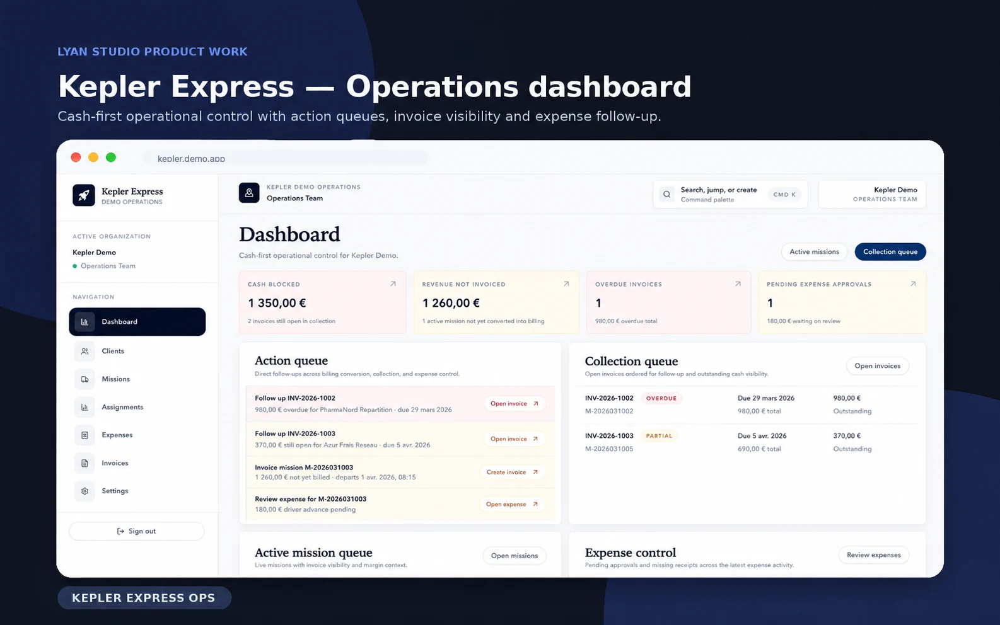

01
Logistics / Mission Operations
Kepler Express
Reference implementation · Public frontend
Kepler Express models one connected process: a delivery mission, the costs it generates, and the invoice and payment follow-up.
The operational problem
Transport and logistics coordination becomes difficult when missions, expenses and billing are maintained separately.
How the work is structured
Bring execution and financial follow-up into one sequence, with expenses linked to the missions that generate them.
- Core workflows
- Clients · Missions · Driver advances · Expenses · Invoices · Payments
- Implementation
- React · TypeScript · Supabase

Evidence boundary. A reachable frontend and public source are available. Real operational adoption, production authorization and measured impact are not verified.